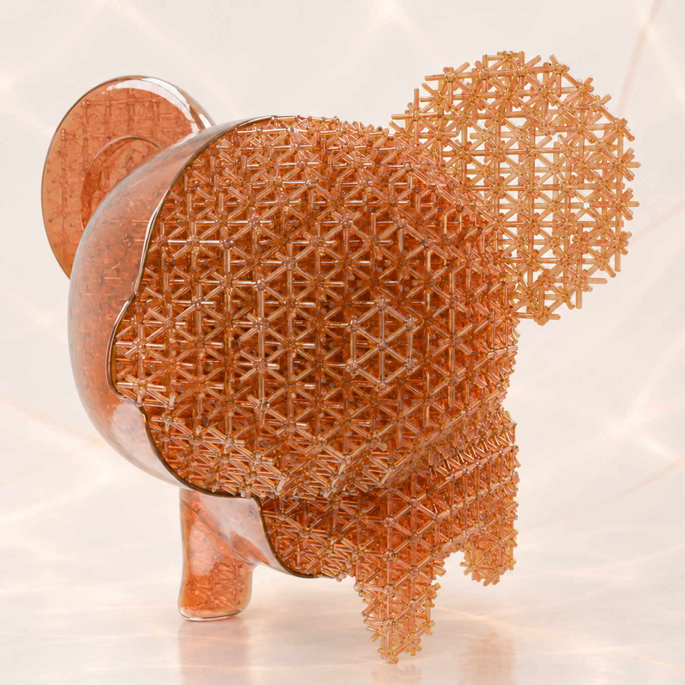
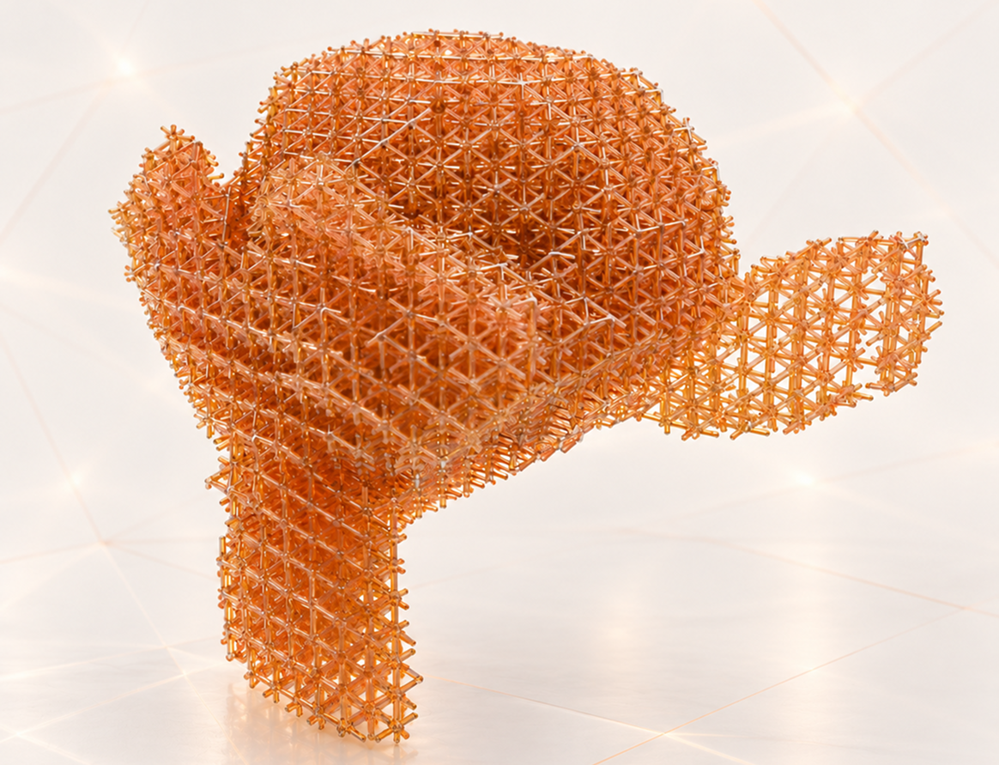
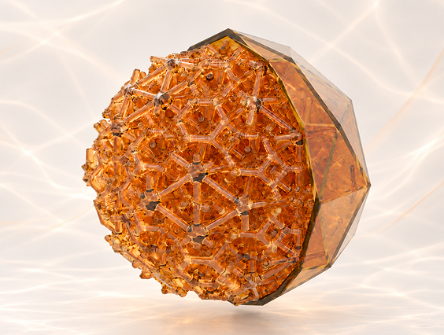
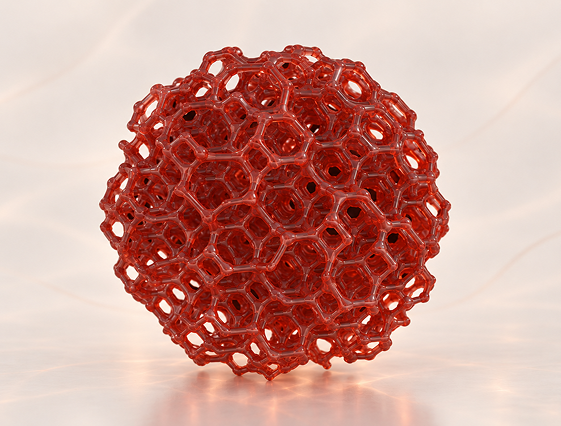
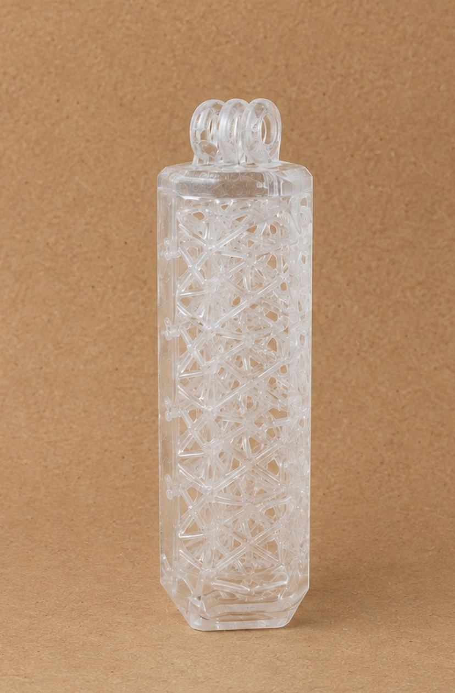
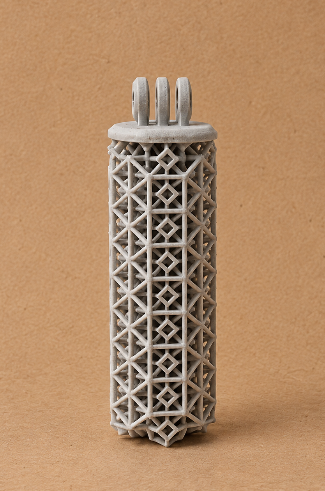

01
PEL — polyhedron edge lattice
A procedural system for generating 3D-printable lattice infill and shaping its deformation behavior.
It started as a lattice infill generator, a way to fill a closed target volume with printable cell structures instead of relying on a slicer's fixed patterns.
It became a system for manipulating preferred deformation. Once the cell geometry is under full control, the infill stops being a filler and starts being a mechanism: the same material at a comparable density can be told which way it would rather move.
Select a closed volume, press Fill This Mesh, and the lattice is generated inside it. Every parameter stays live from there.
Two connection strategies, built from polyhedral cells, and the option to run both at once.
Most of the work is invisible from the front end. Several problems had to be solved before a single button could do anything useful.
Each generated point needs to be classified as either inside or outside the target volume, creating a mask that can be reused throughout the generator.
A regular grid of potential cell centres is generated across the target's bounding box. The inside–outside check removes the points outside the volume, leaving the cells needed to build the initial lattice.
Near the boundary, struts are subdivided to create points closer to the surface. The inside–outside check is then applied again, producing a cleaner lattice that follows the target volume more closely.
The result is resolved through VDB into watertight geometry, the difference between a nice viewport preview and a mesh a slicer will actually accept.




Action camera handles for diving and active usage (running, hiking, etc.)


Once the lattice is generated, its geometry can be controlled at a more local level. Different regions can be given preferred movement directions by manipulating cell geometry — sliding junction vertices along the surfaces they are connected to — alongside proximity-based effects and selective constraints.
This makes it possible to shape how different parts of the lattice deform, rather than treating the entire structure as uniform infill.
Two simple physical tests were used to compare how changes in lattice geometry translated into differences in physical response.
Printed samples with different lattice configurations were compressed by hand as an initial qualitative comparison. The test provided a simple first indication of how noticeably different structures could give, rebound, or resist under similar conditions.
A steel ball was dropped from a fixed height onto each sample and the first rebound was measured across repeated trials. The test provides an early comparison of how different lattice configurations respond under similar loading conditions, rather than a full mechanical characterization.
Same material. Comparable density.
Different geometry.
Measurably different response.
Three directions exploring how controlled lattice deformation could translate into future products and systems.
The generator is open for others to experiment with.